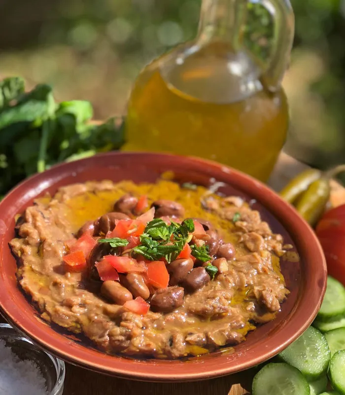
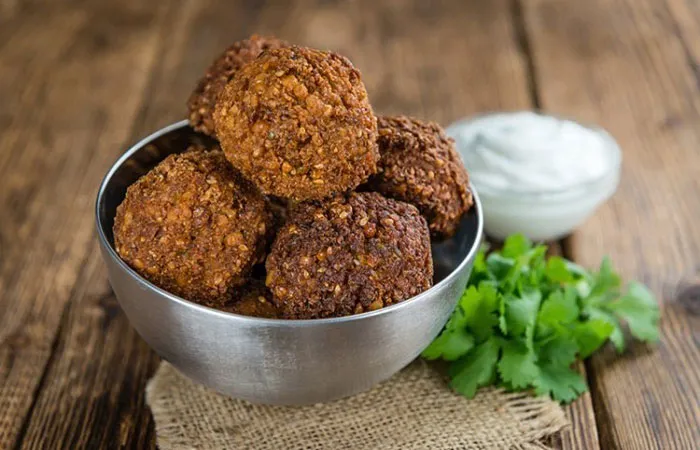
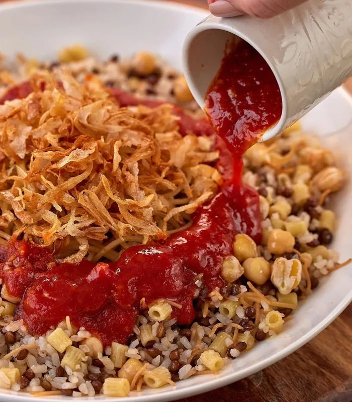

ful medames, uma pasta de favas – um tipo de feijão – temperada com alho e azeite que é encontrada em, praticamente, todas as esquinas das principais cidades.

tamiya (um bolinho feito com purê de feijão) – em vez de grão de bico, que é usado em outras partes do Mediterrâneo – e salsinha, Ele pode ser confundido com o tradicional faláfel, mas além de ser feito com favas, o bolinho é modelado em forma de discos redondos e achatados.

Um dos mais famosos pratos egípcios o koshari é uma mistura de arroz, lentilhas e macarrão coberto com cebola frita e um molho de tomate picante.